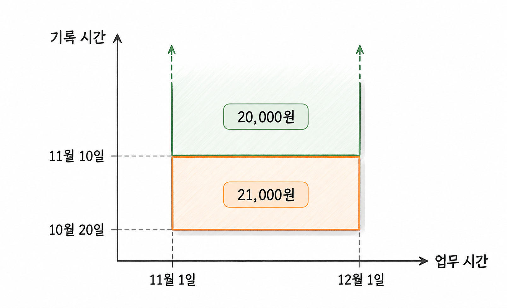

26장. 데이터 변경 이력과 시간 모델링이란?
시간 모델링(temporal modeling)은 데이터가 언제 유효했고 언제 기록되었는지 구분하여 설계하는 일입니다. 가격이나 주문 상태가 바뀌어도 필요한 과거 정보를 조회할 수 있어야 합니다.
25장의 감사 기록은 누가 어떤 작업을 했는지 확인하는 데 초점을 두었습니다. 이 장에서는 특정 시점의 가격과 상태를 어떻게 보관하고 조회할지 다룹니다.
1. 현재값과 과거값
1.1 현재 테이블·이력 테이블·스냅샷
현재 가격만 저장한 상품 테이블에서 가격을 덮어쓰면 이전 가격은 업무 데이터에서 사라집니다. 지난달의 판매 가격을 조회하려면 과거값을 보관할 구조가 필요합니다.
| 저장 방식 | 한 행의 의미 | 주로 답하는 질문 |
|---|---|---|
| 현재 테이블 | 대상의 현재 상태 | 지금 가격은 얼마인가? |
| 이력 테이블 | 대상의 특정 버전 또는 유효 기간 | 그날 적용된 가격은 얼마인가? |
| 스냅샷 | 정해진 시점에 관측한 상태 | 월말에 어떤 상태였는가? |
스냅샷(snapshot)은 특정 시점의 상태를 따로 보관한 데이터입니다. 매일 자정의 재고를 저장한다면 일별 재고 스냅샷이 됩니다. 하루 동안 재고가 여러 번 바뀌어도 자정과 다음 자정 사이의 변경을 모두 보여 주지는 않습니다.
이력 테이블도 모든 변경을 자동으로 담지는 않습니다. 가격이 바뀔 때마다 기록할지, 승인된 가격만 기록할지 정해야 합니다. 같은 트랜잭션 안에서 여러 번 수정한 중간값까지 필요한지도 구분합니다.
현재값과 이력을 함께 관리하는 방법은 다음과 같습니다.
| 구조 | 장점 | 관리할 사항 |
|---|---|---|
| 현재 테이블과 이력 테이블 분리 | 현재 조회가 단순함 | 현재값 변경과 이력 기록을 함께 확정 |
| 전체 버전을 이력 테이블에 저장 | 한 구조에서 현재와 과거 조회 | 현재 시점에 유효한 행을 찾는 조건 필요 |
| 현재 테이블과 정기 스냅샷 사용 | 기준일별 비교가 단순함 | 스냅샷 사이의 변경은 별도 기록 필요 |
현재 테이블과 이력 테이블을 분리했다면 두 테이블을 같은 트랜잭션에서 변경합니다. 현재 가격만 바뀌고 이력이 누락되면 과거 가격을 올바르게 복원할 수 없습니다.
1.2 변경 시점과 업무 유효 시점
데이터베이스에 가격을 입력한 시각과 가격이 적용되는 시각은 다를 수 있습니다.
10월 20일에 다음 달 할인 가격을 등록했다고 가정합니다. 등록은 10월 20일에 이루어졌지만, 할인 가격은 11월 1일부터 적용됩니다.
| 구분 | 의미 | 사례 |
|---|---|---|
| 기록 시점 | 시스템에 정보를 기록한 때 | 10월 20일 |
| 업무 유효 시점 | 업무에서 값이 효력을 갖는 때 | 11월 1일 |
업무 유효 시간(valid time)은 데이터가 업무상 유효한 기간입니다. 기록 시간(transaction time)은 시스템이 그 정보를 보관한 기간입니다. 기록 시간은 시스템이 업무 사실을 언제 알게 되었는지 추적하는 시간축입니다.
수정 시각 하나로 두 의미를 표현하면 예약 변경과 소급 정정을 구별하기 어렵습니다. 가격 이력에는 적용 시작 시각을 두고, 필요하면 기록 시각도 별도로 둡니다.
시간의 기준도 함께 정합니다. 국내 서비스의 일별 가격이라면 한국 표준시의 날짜 경계를 사용할 수 있습니다. 여러 국가에서 같은 순간에 적용하는 정책이라면 시간대를 포함한 시각이나 UTC 기준을 정해야 합니다.
1.3 주문 당시 값과 현재 기준정보
주문 상세에 상품번호만 저장하고 현재 상품 테이블을 조인하면 현재 상품명이 표시됩니다. 상품명이 바뀌면 과거 주문 화면의 이름도 달라집니다.
영수증에 주문 당시 이름이 필요하다면 주문 상세에 당시 상품명을 보관해야 합니다.
| 데이터 | 저장 목적 |
|---|---|
| 상품번호 | 어떤 상품을 주문했는지 연결 |
| 주문 당시 상품명 | 거래 당시 표시 내용을 보존 |
| 주문 단가 | 실제 거래에 적용한 단가 보존 |
| 수량 | 주문한 개수 보존 |
| 현재 상품명 | 현재 상품 정보 표시 |
현재 상품명과 주문 당시 상품명은 서로 다른 사실입니다. 처음에 값이 같았다는 이유로 하나를 제거하면 거래 당시 정보를 잃을 수 있습니다.
주문 단가는 가격 이력에서 매번 다시 계산하지 않는 편이 적절합니다. 회원 할인이나 개별 계약으로 기준 가격과 다를 수 있기 때문입니다. 가격 이력은 기준 가격의 변화를 설명하고, 주문 단가는 확정된 거래 금액을 설명합니다.
2. 유효 기간을 가진 이력
2.1 시작·종료 시점과 반개방 구간
유효 기간에는 시작 시점을 포함하고 종료 시점을 제외하는 반개방 구간을 사용할 수 있습니다.
가격이 11월 1일에 바뀐다면 이전 가격은 11월 1일 직전까지 유효합니다. 새 가격은 11월 1일부터 유효합니다.
| 상품번호 | 적용 시작 | 적용 종료 | 가격 |
|---|---|---|---|
| 501 | 2026-10-01 00:00:00 | 2026-11-01 00:00:00 | 18,000 |
| 501 | 2026-11-01 00:00:00 | 종료 미정 | 21,000 |
조회 조건은 시작 <= 조회 시점과 조회 시점 < 종료입니다. BETWEEN은 양쪽 경계를 모두 포함하므로 이 기간 조건에 그대로 사용하지 않습니다.
종료 시점을 하루 전의 23:59:59로 저장할 필요도 없습니다. 소수 초를 저장하는 컬럼에서는 그 뒤의 시간까지 고려해야 하므로 경계가 복잡해집니다.
예제 26-1 — 가격 유효 기간을 저장하고 경계 시점 조회하기
파일명: ch26_price_history.sql
CREATE TABLE ch26_product (
product_id NUMBER(10)
CONSTRAINT ch26_product_pk PRIMARY KEY,
product_name VARCHAR2(100 CHAR) NOT NULL
);
CREATE TABLE ch26_price_history (
product_id NUMBER(10) NOT NULL,
valid_from TIMESTAMP(6) NOT NULL,
valid_to TIMESTAMP(6),
price NUMBER(12, 0) NOT NULL,
CONSTRAINT ch26_price_hist_pk
PRIMARY KEY (product_id, valid_from),
CONSTRAINT ch26_price_product_fk
FOREIGN KEY (product_id)
REFERENCES ch26_product (product_id),
CONSTRAINT ch26_price_period_ck
CHECK (valid_to IS NULL OR valid_from < valid_to),
CONSTRAINT ch26_price_amount_ck
CHECK (price >= 0)
);
INSERT INTO ch26_product (product_id, product_name)
VALUES (501, '무선 키보드');
INSERT INTO ch26_price_history
(product_id, valid_from, valid_to, price)
VALUES
(501,
TIMESTAMP '2026-10-01 00:00:00',
TIMESTAMP '2026-11-01 00:00:00',
18000);
INSERT INTO ch26_price_history
(product_id, valid_from, valid_to, price)
VALUES
(501,
TIMESTAMP '2026-11-01 00:00:00',
NULL,
21000);
COMMIT;
SELECT product_id, price
FROM ch26_price_history
WHERE product_id = 501
AND valid_from <= TIMESTAMP '2026-11-01 00:00:00'
AND (
valid_to > TIMESTAMP '2026-11-01 00:00:00'
OR valid_to IS NULL
);실행 결과
| PRODUCT_ID | PRICE |
|---|---|
| 501 | 21000 |
이전 가격은 종료 시점이 조회 시점과 같으므로 제외됩니다. 새 가격은 시작 시점이 조회 시점과 같으므로 포함됩니다.
이 예제는 모든 시각을 한국 표준시로 해석한다고 가정합니다. TIMESTAMP 자체에는 시간대가 들어 있지 않으므로 애플리케이션과 데이터베이스가 같은 기준을 사용해야 합니다.
2.2 기간 중복·공백·현재 행의 검증
예제 26-1의 CHECK 제약조건은 한 행의 시작과 종료만 검증합니다. 같은 상품의 다른 행과 기간이 겹치는지는 검사하지 않습니다.
다음 두 가격은 각각 종료가 시작보다 늦지만 서로 겹칩니다.
| 적용 시작 | 적용 종료 | 가격 |
|---|---|---|
| 10월 1일 | 11월 10일 | 18,000 |
| 11월 1일 | 12월 1일 | 21,000 |
11월 5일의 가격을 조회하면 두 행이 나옵니다. 한 상품에 같은 시점의 기준 가격이 하나여야 한다면 오류입니다.
두 반개방 구간은 한쪽의 시작이 다른 쪽의 종료와 같을 때 겹치지 않습니다. 종료가 있는 두 구간의 중복 조건은 다음과 같습니다.
코드 조각
a.valid_from < b.valid_to
AND b.valid_from < a.valid_to종료가 NULL이면 끝이 정해지지 않은 구간으로 다뤄야 합니다. 실제 중복 검사는 다음과 같이 작성할 수 있습니다.
코드 조각
SELECT a.product_id,
a.valid_from AS first_start,
b.valid_from AS second_start
FROM ch26_price_history a
JOIN ch26_price_history b
ON b.product_id = a.product_id
AND a.valid_from < b.valid_from
WHERE (a.valid_to IS NULL OR b.valid_from < a.valid_to)
AND (b.valid_to IS NULL OR a.valid_from < b.valid_to);기간의 공백은 이전 행의 종료와 다음 행의 시작을 비교하여 찾습니다. 이전 종료가 다음 시작보다 이르면 그 사이에 가격이 없는 기간이 생깁니다.
코드 조각
SELECT product_id, valid_to, next_start
FROM (
SELECT product_id,
valid_to,
LEAD(valid_from) OVER (
PARTITION BY product_id
ORDER BY valid_from
) AS next_start
FROM ch26_price_history
)
WHERE next_start IS NOT NULL
AND valid_to < next_start;공백이 항상 오류인 것은 아닙니다. 판매 중지 기간에는 가격이 없어도 된다는 규칙이 있을 수 있습니다. 최초 판매일부터 가격이 끊기면 안 되는지도 별도로 정합니다.
종료가 NULL인 행과 현재 유효한 행도 구분해야 합니다. 예제 26-1에서 10월 20일에 유효한 가격은 18,000원입니다. 종료가 NULL인 21,000원 행은 미래 예약 가격입니다.
끝이 열린 행을 상품별로 최대 하나만 허용하려면 함수 기반 유일 인덱스를 사용할 수 있습니다.
코드 조각
CREATE UNIQUE INDEX ch26_price_open_uq
ON ch26_price_history (
CASE WHEN valid_to IS NULL THEN product_id END
);이 인덱스는 끝이 열린 행의 중복을 막습니다. 종료 시점이 있는 두 행의 기간 중복까지 막지는 않습니다.
동시 등록도 고려해야 합니다. 두 세션이 모두 “겹치는 행이 없다”고 조회한 뒤 입력하면 중복 기간이 생길 수 있습니다. 같은 상품의 가격을 변경할 때는 먼저 상품 행을 SELECT FOR UPDATE로 잠근 뒤 검사하도록 순서를 통일할 수 있습니다. 검사와 입력은 같은 트랜잭션에서 수행합니다.
2.3 과거 시점 조회와 이력 인덱스
특정 상품의 과거 가격을 조회할 때는 상품번호와 조회 시점을 함께 사용합니다. 예제 26-1의 기본키 인덱스는 (product_id, valid_from) 순서이므로 이 조회에 활용할 후보가 됩니다.
상품번호로 범위를 제한한 뒤, 조회 시점 이전에 시작한 가격을 찾을 수 있습니다. 다만 종료 조건까지 확인해야 하므로 오래된 이력이 많으면 여러 행을 읽을 수 있습니다.
조회 목적에 따라 필요한 인덱스도 달라집니다.
| 조회 목적 | 검토할 인덱스와 접근 |
|---|---|
| 한 상품의 시점별 가격 | (product_id, valid_from) |
| 한 상품의 전체 변경 내역 | 상품번호와 시작 시각 순서 활용 |
| 특정 날짜에 유효한 모든 상품 가격 | 많은 상품의 기간 조건 평가 |
| 곧 적용될 예약 가격 목록 | 시작 시각을 기준으로 한 접근 검토 |
상품별 조회에 좋은 인덱스가 전체 상품의 기준일 조회에도 같은 효과를 내지는 않습니다. 기간 조건 두 개를 인덱스 하나로 모두 좁은 범위에서 검색하기도 어렵습니다.
기간에 중복이 없다는 규칙을 보장하면 조회 시점 이전의 가장 최근 시작 행을 먼저 찾을 수도 있습니다. 이때도 종료 시점을 검사해야 합니다. 기간에 공백이 있다면 가장 가까운 과거 가격이 조회 시점에는 유효하지 않을 수 있습니다.
성능을 비교할 때는 최근 시점과 오래된 시점을 모두 사용합니다. 반환 행 수가 같아도 검사하는 이력의 수는 달라질 수 있습니다.
3. 상태 전이와 과거 정정
3.1 현재 상태와 상태 변경 사건
주문 테이블의 상태는 현재 업무를 판단하는 데 사용합니다. 상태 이력은 주문이 어떤 과정을 거쳤는지 설명합니다.
| 주문번호 | 현재 상태 |
|---|---|
| 8101 | 배송 중 |
| 사건번호 | 주문번호 | 발생 시각 | 이전 상태 | 이후 상태 |
|---|---|---|---|---|
| 1 | 8101 | 10월 10일 09:00 | 없음 | 주문 접수 |
| 2 | 8101 | 10월 10일 09:05 | 주문 접수 | 결제 완료 |
| 3 | 8101 | 10월 11일 14:00 | 결제 완료 | 배송 중 |
상태 전이(state transition)는 허용된 규칙에 따라 한 상태에서 다른 상태로 바뀌는 일입니다. 상태 변경 사건에는 발생 시각, 이전 상태, 이후 상태, 사유를 기록할 수 있습니다.
같은 상태로의 변경 요청을 허용할지도 정합니다. 배송 중 상태를 다시 배송 중으로 바꾸라는 요청이 들어오면, 중복 요청으로 무시할지 별도 사건으로 남길지 구분해야 합니다.
현재 상태와 사건 이력을 함께 저장한다면 둘을 같은 트랜잭션에서 변경합니다. 상태 변경에 실패했다면 성공한 것처럼 이력만 남아서는 안 됩니다.
사건번호는 사건을 구별하는 키입니다. 번호가 크다는 이유만으로 업무 발생 순서나 커밋 순서를 단정하지 않습니다. 업무 순서가 필요하면 주문별 순번 등 별도의 규칙을 정합니다.
3.2 허용 전이·취소·소급 변경
상태 코드가 유효하다는 것과 상태 변경이 허용된다는 것은 다른 규칙입니다. CHECK나 외래키로 ‘배송 중’이라는 값을 검증할 수는 있습니다. 하지만 ‘주문 접수에서 배송 중으로 바로 변경할 수 있는가’까지 검증하지는 않습니다.
| 이전 상태 | 요청 상태 | 판단 사례 |
|---|---|---|
| 주문 접수 | 결제 완료 | 결제가 확인되면 허용 |
| 결제 완료 | 배송 중 | 출고가 확인되면 허용 |
| 주문 접수 | 배송 중 | 결제 단계를 건너뛰므로 거부 |
| 배송 완료 | 주문 취소 | 반품·환불 절차가 필요한지 별도 판단 |
동시에 상태를 변경할 때는 앞서 읽은 상태가 여전히 같은지도 확인합니다.
코드 조각
UPDATE orders
SET status_code = :new_status
WHERE order_id = :order_id
AND status_code = :expected_status;변경 행 수가 1일 때만 상태 이력을 추가합니다. 0이면 다른 세션이 상태를 바꾸었거나 주문이 없는 경우이므로 다시 확인합니다. 허용 전이 검증도 함께 수행해야 합니다.
취소는 과거 사건을 삭제하는 일과 다릅니다. 결제 후 취소했다면 결제 사건과 취소 사건이 모두 필요합니다. 과거 사건을 지우면 실제 경과를 설명하기 어렵습니다.
소급 변경은 업무 발생 시각보다 늦게 정보를 반영하는 일입니다. 실제 배송은 10월 11일에 시작되었지만 시스템에는 10월 12일에 입력할 수 있습니다. 두 시각을 분리해야 배송 소요 시간과 입력 지연을 각각 계산할 수 있습니다.
잘못 기록한 사건을 정정할 때는 정정 대상 사건번호와 사유를 남깁니다. 사건을 추가로 보관하는 방식이라면 조회할 때 취소되거나 대체된 사건을 어떻게 제외할지도 정해야 합니다.
3.3 업무 시간과 기록 시간을 함께 관리하는 설계
과거 가격을 정정할 때는 두 질문이 생깁니다.
“현재 확인한 사실을 기준으로 11월 5일의 가격은 얼마인가?”
“11월 6일 당시 시스템은 11월 5일의 가격을 얼마로 알고 있었는가?”
첫 질문에는 업무 유효 시간이 필요합니다. 두 번째 질문에는 당시의 기록도 필요합니다. 두 시간축을 함께 사용하는 설계를 이중 시간 모델(bitemporal model)이라고 합니다.
다음 사례에서는 11월 가격을 21,000원으로 등록했다가 11월 10일에 20,000원이 맞다고 정정했습니다. 표의 기록 시작과 종료는 시스템이 각 내용을 알고 있던 기간입니다.
| 업무 시작 | 업무 종료 | 가격 | 기록 시작 | 기록 종료 |
|---|---|---|---|---|
| 11월 1일 | 12월 1일 | 21,000 | 10월 20일 | 11월 10일 |
| 11월 1일 | 12월 1일 | 20,000 | 11월 10일 | 종료 미정 |
11월 6일 당시 알고 있던 11월 5일 가격은 21,000원입니다. 현재 정정된 사실로 판단한 11월 5일 가격은 20,000원입니다.

그림 26-1처럼 업무 기간이 같아도 기록 기간이 다르면 별도의 버전입니다. 정정할 때는 이전 버전의 기록 종료를 닫고 새 버전을 추가합니다.
두 시간축을 조회할 때는 각각 반개방 구간 조건을 적용합니다.
코드 조각
SELECT price
FROM price_bitemporal
WHERE product_id = :product_id
AND valid_from <= :business_at
AND (valid_to > :business_at OR valid_to IS NULL)
AND recorded_from <= :known_at
AND (recorded_to > :known_at OR recorded_to IS NULL);이 코드는 두 시간축의 조회 형태를 보여 줍니다. business_at은 가격을 적용할 업무 시점이고, known_at은 당시 알고 있던 정보를 확인할 기록 시점입니다.
기록 시각을 SYSTIMESTAMP로 입력했다고 해서 커밋 시각이 되는 것은 아닙니다. 입력 후 커밋까지 시간이 걸릴 수 있습니다. 커밋 기준의 정확한 과거 상태가 필요하다면 애플리케이션의 기록 시각만으로 요구를 충족하는지 따로 판단해야 합니다.
이중 시간 모델에는 추가 저장공간과 복잡한 정정 절차가 필요합니다. 당시 보고 내용을 재현해야 하는 업무처럼 두 질문이 모두 필요한 경우에 적용합니다.
4. Oracle의 과거 조회 기능
4.1 Flashback Query와 UNDO 보존 범위
Flashback Query는 지정한 과거 시점에 커밋되어 있던 데이터를 조회하는 기능입니다. AS OF TIMESTAMP 또는 AS OF SCN을 사용합니다. 일반적인 Flashback Query는 UNDO를 이용합니다.
코드 조각
SELECT product_id, product_name
FROM ch26_product
AS OF TIMESTAMP (SYSTIMESTAMP - INTERVAL '10' MINUTE)
WHERE product_id = 501;이 코드는 테이블이 10분 전에도 존재했고 필요한 과거 정보가 남아 있을 때 사용합니다. 다른 스키마의 테이블을 조회하려면 조회 권한과 FLASHBACK 권한 등이 필요합니다.
UNDO_RETENTION 설정만으로 조회 가능 기간이 보장되지는 않습니다. 조회 가능한 기간은 UNDO 공간과 보존 설정의 영향을 받습니다. 필요한 UNDO가 사라지면 과거 조회가 실패할 수 있으며, 테이블 구조 변경도 제약이 됩니다.
Flashback Query가 보여 주는 것은 데이터베이스의 과거 상태입니다. 미래 적용 가격을 어제 등록했다면 어제의 조회 결과에도 그 행이 존재할 수 있습니다. 그 가격이 어제 업무상 유효했다는 뜻은 아닙니다.
4.2 Flashback Data Archive와 업무 이력의 비교
Flashback Data Archive는 활성화한 테이블의 과거 버전을 지정한 보존 기간에 따라 보관하는 기능입니다. 필요한 이력이 아카이브에 있으면 일반 UNDO의 보존 범위를 넘는 과거도 조회할 수 있습니다.
| 구분 | Flashback Data Archive | 직접 설계한 업무 이력 |
|---|---|---|
| 중심 질문 | 과거에 테이블에 무엇이 있었는가? | 업무상 언제 어떤 값이 유효했는가? |
| 기록 방식 | 대상 테이블의 버전을 자동 보관 | 업무 규칙에 따라 이력 생성 |
| 업무 사유 | 업무 컬럼으로 별도 설계 필요 | 사건과 정정 사유를 함께 설계 가능 |
사용하려면 관리자가 저장공간, 보존 기간, 권한과 적용 제약을 확인해야 합니다. 활성화 이전의 업무 이력이 자동으로 만들어지지는 않습니다.
업무 유효 기간이 있는 테이블에 적용하면 정정 전 데이터베이스 상태를 확인하는 데 도움이 됩니다. 다만 허용 상태 전이나 가격 기간의 중복까지 검증해 주는 기능은 아닙니다.
5. 연습문제 — 가격 이력과 주문 상태 이력 설계
요구사항
주문 서비스가 다음 규칙을 사용합니다.
- 상품별 기준 가격은 적용 시작 시각부터 유효합니다.
- 미래 가격을 미리 등록할 수 있습니다.
- 판매 가능한 기간에는 기준 가격이 하나여야 합니다.
- 주문에는 주문 당시 상품명과 실제 적용 단가를 보관합니다.
- 주문은 주문 접수, 결제 완료, 배송 중, 배송 완료 상태를 거칩니다.
- 취소 가능 여부는 주문 상태와 출고 여부에 따라 판단합니다.
- 배송 발생 시각과 시스템 기록 시각은 다를 수 있습니다.
- 과거 가격의 오류를 정정해도 정정 전 보고 내용을 확인해야 합니다.
작성할 내용
- draw.io로 상품, 가격 이력, 주문, 주문 상세, 상태 변경 사건의 ERD를 작성합니다.
- 각 테이블에서 한 행의 의미와 키를 정의합니다.
- 가격의 업무 유효 기간과 기록 기간을 구분합니다.
- 기간 중복·공백·끝이 열린 행의 검증 방법을 작성합니다.
- 주문 상태별 허용 전이와 취소 규칙을 표로 작성합니다.
- 가격 정정과 상태 변경을 확정하는 트랜잭션의 범위를 정합니다.
- 다음 질문에 답하는 조회 SQL을 작성합니다.
- 특정 업무 시점에 적용되는 상품 가격
- 정정 이전에 알고 있던 특정 업무 시점의 가격
- 주문의 상태 변경 순서와 각 사건의 발생·기록 시각
검증할 입력
| 입력 상황 | 확인할 내용 |
|---|---|
| 이전 가격 종료와 새 가격 시작이 같음 | 경계 시점에 새 가격 하나만 조회 |
| 같은 상품의 가격 기간이 겹침 | 등록 거부 |
| 판매 기간에 가격 공백이 생김 | 검증에서 발견 |
| 두 세션이 같은 상품의 가격을 동시에 등록 | 기간 중복 방지 |
| 결제 완료 주문을 두 세션이 동시에 변경 | 충돌을 감지하고 이력 일치 유지 |
| 과거 가격을 소급 정정 | 정정 전후의 판단 결과를 각각 조회 |
완료 조건
- 종료가 미정인 행과 현재 유효한 행을 구분합니다.
- 가격이 바뀌어도 확정된 주문 단가가 달라지지 않습니다.
- 가격의 기간 중복을 동시 등록 상황에서도 방지합니다.
- 현재 주문 상태와 상태 변경 이력이 같은 트랜잭션에서 확정됩니다.
- 과거 정정의 대상과 사유를 추적할 수 있습니다.
- Flashback 기능의 보관 범위와 업무 이력의 보관 요구를 구분하여 설명합니다.